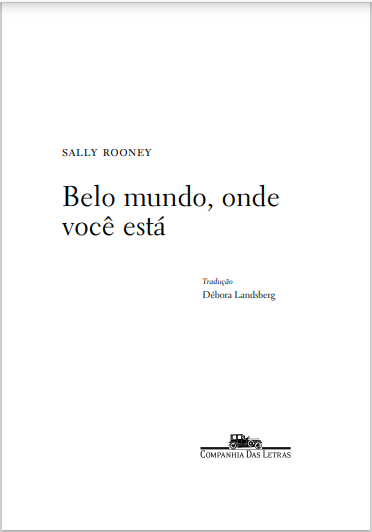

Belo mundo, onde você está
Quando escrevo algo, frequentemente penso que aquilo é muito importante e que sou uma grande escritora. Acho que acontece com todos. Mas há um cantinho da minha alma onde sempre sei muito bem o que sou, isto é, uma pequena, pequena escritora. Juro que sei. Mas não me importa muito. Natalia Ginzburg
Baixar Livro